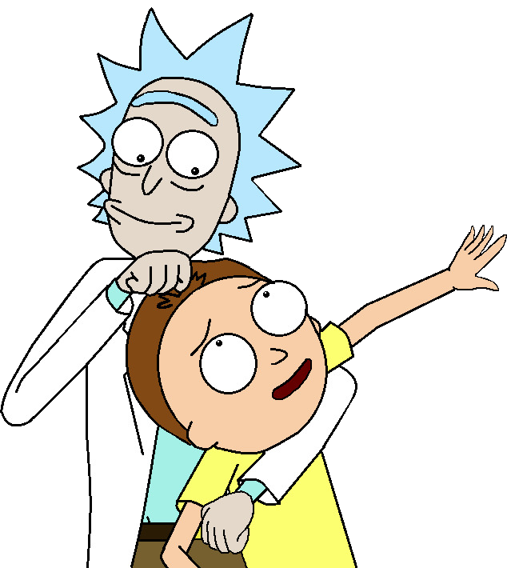
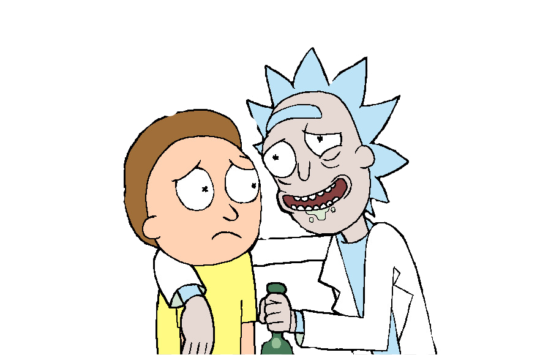

Rick y Morty es una serie de televisión estadounidense de animación para adultos creada por Justin Roiland y Dan Harmon para Adult Swim. La serie sigue las desventuras de un científico, Rick, y su fácilmente influenciable nieto, Morty, quienes pasan el tiempo entre la vida doméstica y los viajes espaciales intergalácticos. Roiland es el encargado de darle voz a los dos personajes principales, la serie también incluye las voces de Chris Parnell, Spencer Grammer, y Sarah Chalke.


Los orígenes de la serie pueden encontrarse en un cortometraje rudimentario animado por Roiland para el festival de cine Channel 101 llamado Doc and Mharti, una parodia de los principales protagonistas de Back to the Future. NBC despidió a Harmon por discusiones entre él y los ejecutivos de la serie Community, y entonces él y Roiland desarrollaron una serie basada en la película recientemente difundida. La serie ha sido aclamada universalmente por su originalidad, creatividad y humor.